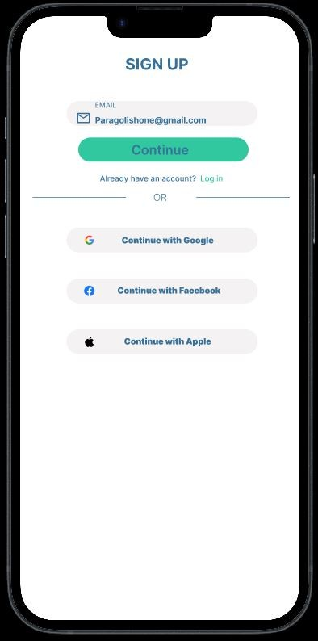
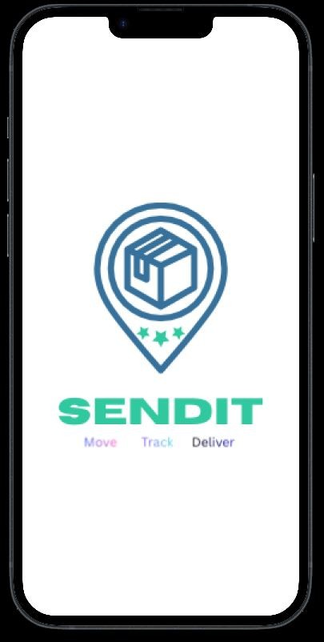

Mobile app & website · May–June 2025
SENDIT
A logistics and delivery experience for Nigerian small-business owners. Research highlighted the importance of trust, communication and shipment visibility, shaping a product concept built around more reliable delivery management.